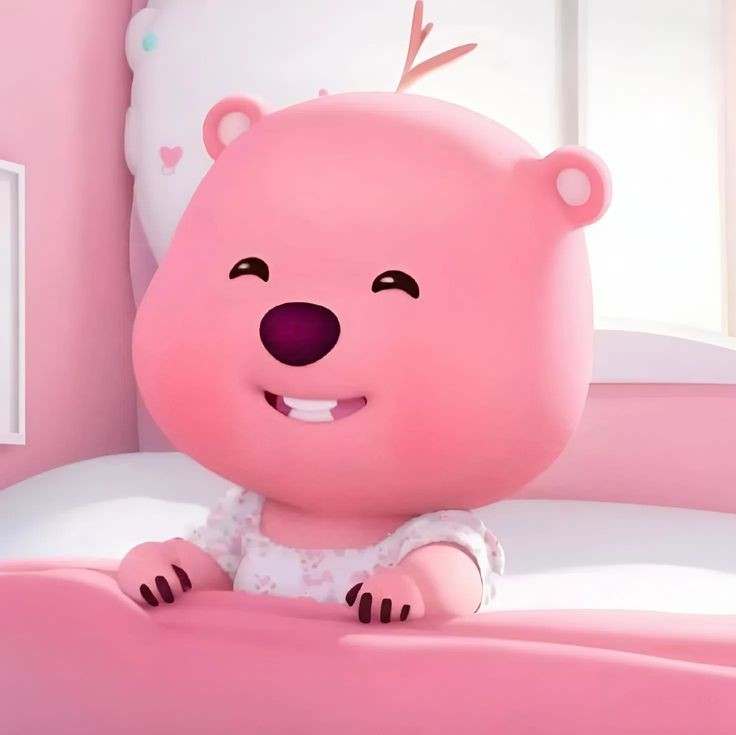
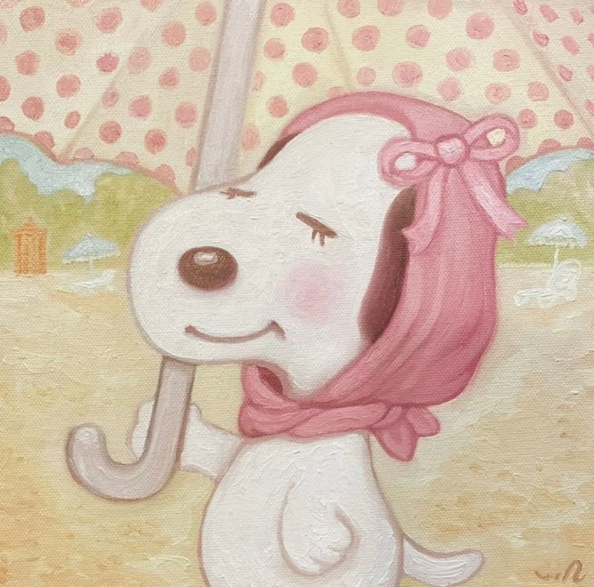
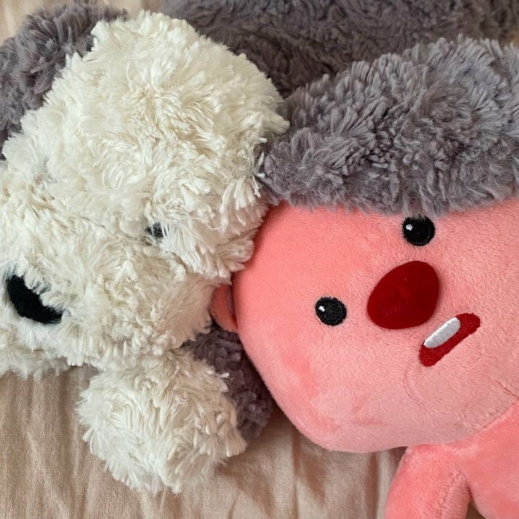

🍽️
Sisig
One of my favorite meals.
A few of the little things that make me smile and feel at home.
One of my favorite meals.
Childhood Favorite.
Especially french fries and mashed potatoes.
I am not really into soft drinks, although I do drink them sometimes. I also love having ice cream whenever I feel sad.
My music taste is a mix of different artists and sounds. Some of my favorites include:
Pink, in all its pretty shades.
Manila, because I love the city lights.
Loopy and Snoopy have a special place in my favorites.
Cute, cozy, and always pink in my heart.



Here are some songs I love listening to. Press play and enjoy my playlist!